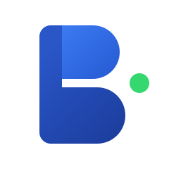
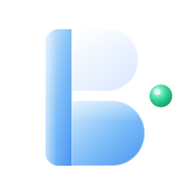
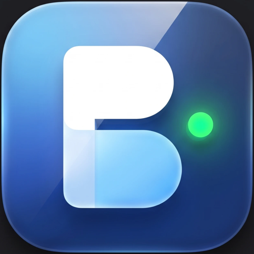

Buddy
Glass B, green hand-over dot, spaced-caps wordmark.

Mark
Mark on dark
App iconMark on light
Lockup on dark
Lockup on light
Wordmark
Favicon sizes
Glass B, green hand-over dot, spaced-caps wordmark.

Mark
Mark on dark
App icon